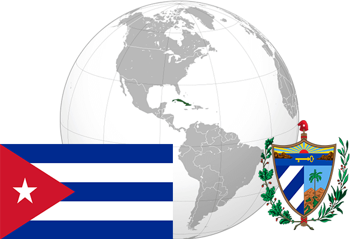

To`liq nomi: Kuba Respublikasi
Region: Markaziy Amerika
Qonunchilik shakli: Respublika
Mustaqillik kuni : 10-dekabr 1898-yil (Ispaniyadan)
Poytaxt: Gavana
Maydoni: 110 860 km² (dunyoda 104 -o`rinda )
Chegaradosh davlatlari: yo`q
Aholisi: 11 061 886 (dunyoda 77 -o`rinda, 2013 -yil roʻyxat)
Aholi zichligi: 102 /km²
Aholining o`rtacha yoshi: 75,95 yil ( 79,3 ayollar, 72,6 erkaklar)
Rasmiy tili: Ispan tili
Dini: katolik
Pul birligi: Peso
Telefon prefiksi: +53
Internet domen: .cu
Xalqaro tashkilotlarga a`zoligi: BMT (1945 – yildan)
Dengiz va okeanlarga chiqishi: Atlantika okeani, Karib dengizi
YIM: Butun: $ 114,1 mlrd, Jon boshiga: $ 9900 (2010 - yil roʻyxati)
Yirik shaharlari: Gavana, Santyago-de-Kuba